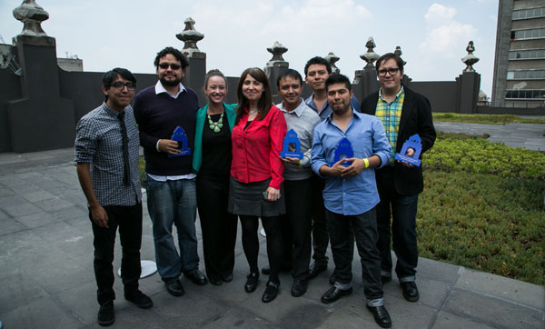
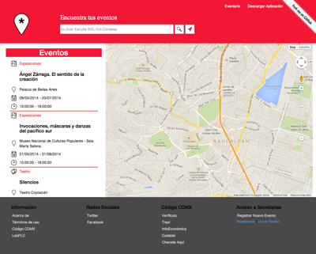
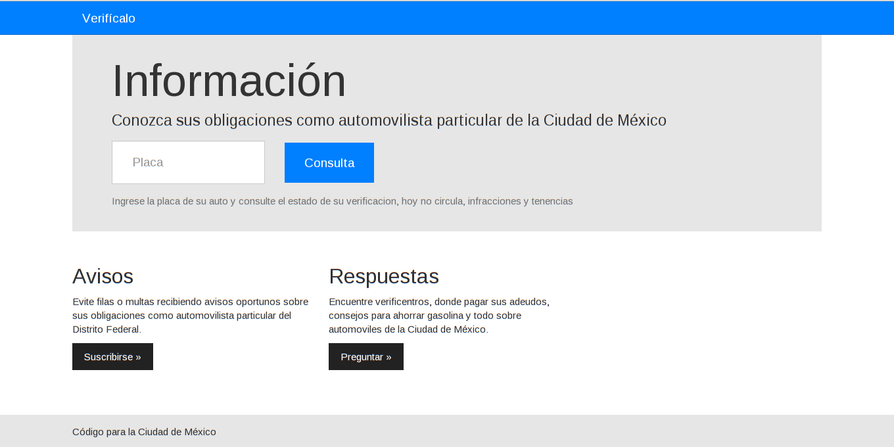

Code for Mexico City
“I think that technology allows us to get involved in public matters in ways that we couldn't imagine a few years ago. Gathering people who are interested in collaborating with each other, whether they are tech-savvy or not, has proven to be able to generate small changes. It's these small changes that show things can work out well if the work is done from the bottom up.”
Mexico City Government Pioneers Innovation to Improve People’s Lives

At 21 million people, Mexico City is the biggest city in the western hemisphere and larger than most countries in the world. The challenges of implementing civic technology in this context are immense but global cities like Mexico City are poised to take the lead on issues that nation-states would have tackled in the past. For civic technology to have a lasting impact on the lives of citizens it has to work in places like this.
Elected in 2012, Mayor Miguel Angel Mancera founded the Laboratorio Para la Ciudad (Mexico City Government Innovation Lab) to institutionalize innovation inside city government. It is run as a creative think tank and is home to Codigo DF (Code for Mexico City). Codigo DF recruited, trained and guided five skilled technologists to serve as fellows for a nine-month program in which they partnered with six Mexico City government departments. Working in partnership with these departments, they used technology to devise solutions to problems facing city residents.
Projects
Eventario
Making it easier for Mexico City residents to find events near them and connect to their communities.
Mexico City is a thriving metropolis but its residents can feel unconnected to each other and overwhelmed by the multitude of activities in the city because they have no easy way to sort and filter events based on their preferences. Code for Mexico City fellow Carlos Castellanos worked with government partners in the Mexico City Tourism and Culture Secretariats to create a more robust database of the city’s events and activities and then built Eventario to give citizens a better experience discovering them. Doing so required coordinating and opening data across multiple government agencies, which came to form the foundation that powered the Lab’s other fellowship projects.
“I code for Mexico City because it’s a great chance to use my knowledge and contribute to society. Through Code for Mexico City I hope to find solutions that improve the city, working alongside people directly involved in critical matters.”
Mexico City residents are very dependent on taxis for transportation. There are over 133,000 registered legal taxis and many more illegal ones, but it is very difficult to differentiate between the two. Illegal taxis may look like sanctioned taxis but they do not undergo the same safety evaluation process or pay the same fees as legal taxis. Code for Mexico City fellow Miguel Moran worked with SETRAVI to create Traxi which allows riders to look up a credential number, see whether it is sanctioned, and receive a confidence score and other rider-generated rating information. Traxi is also equipped with a panic button that, when activated, transmits a rider’s location to an emergency contact. By empowering residents with information and tools, Traxi makes transportation in Mexico City safer.
“I Code for Mexico City to face the problems of a megalopolis using technology that is not always accessible to everyone. That’s the biggest challenge.”
Mexico has extremely high obesity rates and has surpassed the United States with one of the highest rates of Type-2 diabetes in the world. Seven out of ten Mexicans are overweight. Young people are especially unlikely to prioritize preventative health. Ten years from now, if these trends continue, the Health Secretariat will not have adequate funding to provide for the health care needs of Mexico City’s residents.
Cuidate makes staying active fun—and rewards citizens for taking care of themselves. Code for Mexico City fellow Juan Sanchez worked with the Health Secretariat to create an app that allows residents to track their healthy activities and earn points which can be redeemed for movie tickets or other prizes. The app surfaces some of the same outdoor, healthy activities (like road races) made available through Eventario and you can even track rides taken with EcoBici, the city’s bike share service, and share your activity with friends, encouraging a little healthy competition.
“I became a Codigo DF fellow because I was excited about having the opportunity to do research and develop something real and useful.”
All Mexico City residents have access to free health clinics but many of them, and youth in particular, don’t know how to find them and don’t prioritize preventive care. There is no easy way for people to search for and find health centers that offer free services. Juan Sanchez, a Code for Mexico City fellow, worked with the Health Secretariat to develop an application that maps all of the health centers in the city, helping residents to find the clinic that meets their needs.

Verifícalo
Giving people a one stop digital shop for all of their pollution-preventing car needs.
Mexico City is plagued by high pollution rates, with transport responsible for 60% of carbon emissions. In response, the city has enacted an assortment of policies to cut down on emissions such as limiting the number of days a week that each car can circulate and requiring regular smog checks. The multitude of policies and regulations are confusing and spread out over various departments. Working with the Environment Secretariat, Code for Mexico City fellow Manuel Rabade built Verificalo, a website that aggregates all of these policies and requirements into one place and allows car owners to enter their registration information and get back tailored information about their own obligations (which days they can drive, when their next smog check is required and where they can get one, whether they have any outstanding tickets, and what taxes they owe). It also allows citizens to sign up for text message reminders about all of these things.
By making this data actionable and putting the citizen at the center of the experience, Verificalo makes it vastly easier for citizens to comply with clean air regulations and helps Mexico City mitigate air pollution.
“I joined the fellowship program because I was excited about building things that would be useful for such a large population. I thought it would be a great learning experience and opportunity to apply things I already knew.”
Public markets have been a staple of Mexican society for years. They connect consumers directly with producers, foster economic development, support small scale businesses, and create a sense of community. Due to a policy shift that now allows supermarkets to operate within close proximity to public markets, a lack of knowledge of the location and products offered by public markets and outdated legislation that prohibits a range of improvements from being made, public markets in Mexico are losing market share.
Built by Code for Mexico City fellow Emanuel Zamano in collaboration with the Economic Development Secretariat, Infomercado maps all of Mexico City’s public markets and provides users advanced search options to better connect vendors with customers. It also gives merchants a platform to promote their goods. By bridging the two groups the site benefits merchants and consumers economically and revives the sense of community public markets are known to foster.
“I joined Code for Mexico City because I’m interested in developing better digital tools and disseminating them so that we can impact people and help improve their everyday lives in the city.”